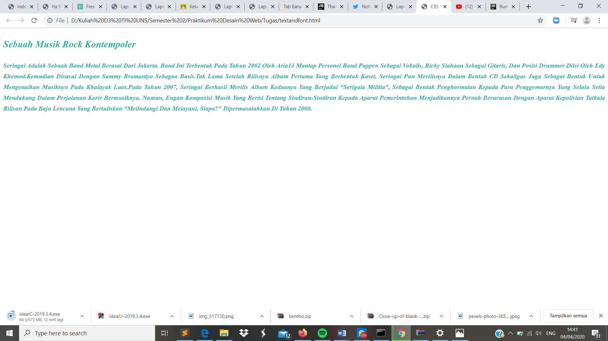

Format Text dan Font
Pendahuluan
Format teks sering kita jumpai dalam kita meuliskan suatu artikel ataupun kalimat sederhana.Biasanya format teks yang kita gunakan yakni pemberian jarak antar teks, atau pemberian spasi antar kata.
Font atau huruf merupakan sebuah alat untuk komunikasi cetak secara visual,akan tetapi dalam hal penulisan setiap paragrafnya pasti akan memiliki gaya yang berbeda pada point tertentu. Untuk mengatur font pada css kita perlu menggunakan properti font, dimana properti font memiliki turunan properti-properti yang lainnya, meskipun properti font sendiri dapat mewakili properti lainnya, tetapi kadang-kadang kita tidak membutuhkan.
Codingan
<!DOCTYPE html>
<html lang="id">
<head>
<meta charset="utf-8">
<meta name="viewsport" content="width=device-width, initial-scale=1.0">
<title>CSS Eksternal Style</title>
<link rel="stylesheet" type="text/css" href="font.css">
</head>
<body>
<div class="text-styling">
<h2>Sebuah Musik Rock Kontempoler</h2>
<p>Seringai adalah sebuah band metal berasal dari Jakarta. Band ini
terbentuk pada tahun 2002 oleh Aria13 mantap personel band Puppen
sebagai vokalis, Ricky Siahaan sebagai gitaris, dan posisi drummer
diisi oleh Edy Khemod.Kemudian disusul dengan Sammy Bramantyo sebagao
basis.Tak lama setelah rilisnya album pertama yang berbentuk kaset,
Seringai pun merilisnya dalam bentuk CD sekaligus juga sebagai bentuk
untuk mengenalkan musiknya pada khalayak luas.Pada tahun 2007,
Seringai berhasil merilis album keduanya yang berjudul “Serigala Militia”,
sebagai bentuk penghormatan kepada para penggemarnya yang selalu setia
mendukung dalam perjalanan karir bermusiknya. Namun, engan komposisi
musik yang berisi tentang sindiran-sindiran kepada aparat pemerintahan
menjadikannya pernah berurusan dengan aparat kepolisian tatkala rilisan
pada baju lencana yang bertuliskan “Melindungi dan Melayani, Siapa?"
dipermasalahkan di tahun 2008.</p>
</div>
</body>
</html>
Kode CSS Eksternal
.text-styling{
font-family:Roboto,san-serif;
font-style:italic;
font-weight: 600;
text-align: justify;
color:#20B2AA;
text-transform: capitalize;;
line-height: 1.7;
}
Hasil Screenshot

Analisis
Pada percobaan membuat format teks dan font kali ini dapat kita ketahui bahwa hasil yang ditampilkan berupa heading dan sebuah paragraf. Untuk font yang digunakan saya menggunakan font-family: Robot, san-serif dengan font-style: italic. Untuk penggunaan css lebih lengkap dapat dilihat pada css eksternal font.css diatas.